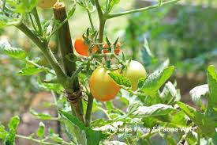

Info Tanaman Banyumanik

Tomat
Kingdom: Plantae
Divisi: Tracheophyta
Class: Magnoliopsida
Ordo: Solanales
Famili: Solanaceae
Genus: Solanum
Spesies: Solanum lycopersicum
🌱 Budidaya
- Lingkungan: Dataran rendah hingga tinggi (0–1.500 mdpl), suhu ideal 20–27°C, sinar matahari penuh. Tanah harus gembur dan subur dengan pH 5,5–7.
- Penanaman: Jarak tanam 50 x 70 cm, dapat ditanam di bedengan, pot, atau polybag.
- Perawatan: Siram rutin pagi & sore hari, beri pupuk organik + NPK tiap 2 minggu. Gunakan ajir (penyangga) agar batang kokoh dan buah tidak menyentuh tanah.
💡 Fun Fact
"Buah atau Sayur?" — Secara botani tomat adalah buah, namun dalam kuliner sering dikategorikan sebagai sayuran karena cara pengolahannya.
🃠Manfaat
- Mengandung likopen sebagai antioksidan yang membantu mencegah kanker.
- Dapat diolah menjadi berbagai makanan sehat seperti sambal, sup, dan salad.
- Dimanfaatkan sebagai masker wajah alami untuk menyegarkan, melembapkan, dan mengecilkan pori-pori.